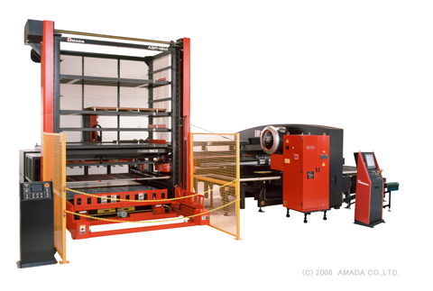

1個からの試作
初回製作、現行品の改良、既存図面からの再製作など、少量案件の確認が可能です。
SHEET METAL / CHASSIS / CABINET
株式会社 飯島シャーシは、
卓上用シャーシ、キャビネット、
測定器・通信機器まわりの
精密板金加工を得意としています。
試作1個、小ロット、緊急品、
板厚違いの複合加工まで、
図面をもとに加工可否と納期を確認します。
CAPABILITY
飯島シャーシが得意とするのは、手で持ち運べるサイズの精密板金製品です。 通信機、医療機、学校教材など、筐体・シャーシ・キャビネットが必要な製品で、図面確認から製作まで対応します。
塗装、メッキ、シルク印刷、機械加工などは協力会社と連携し、板金単体で終わらない製品づくりを支えます。
初回製作、現行品の改良、既存図面からの再製作など、少量案件の確認が可能です。
必要数に合わせた加工、多品種製品、継続製作品のブランク加工にも対応します。
複数の板厚や複雑形状を含む案件も、図面を確認して加工方法を検討します。
急ぎの1点加工は、仕様、材質、納期を確認したうえで対応可否を回答します。
PROCESS
用途、材質、板厚、数量、納期を確認します。
レーザー加工機、タレットパンチプレスで切断・穴あけ。
各種ベンダーで形状に合わせて曲げ加工。
TIG、CO2、スポット、スタッド溶接などに対応。
品質確認後、指定場所へ納品します。
WORKS
掲載製品は、既存サイトで紹介されている用途例をもとにしています。

卓上で扱いやすいサイズのシャーシ。機器内部を支える板金部品として製作します。

外観、精度、取り付け性が求められる医療機器まわりの板金加工に対応します。

教材用途に合わせた板金部品。用途、設置方法、数量を確認して製作します。

EQUIPMENT
レーザー加工機、NCタレットパンチプレス、NCベンダー、溶接機を備え、製品の形状や数量に合わせた工程を選びます。 材料自動供給装置により長時間自動運転にも対応します。
REQUEST
COMPANY
葛飾区の本社と三郷市の工場を拠点に、精密板金加工を行っています。
CONTACT
シャーシ、キャビネット、測定器部品、教材関連部品など、精密板金加工のご依頼は電話またはメールでお問い合わせください。